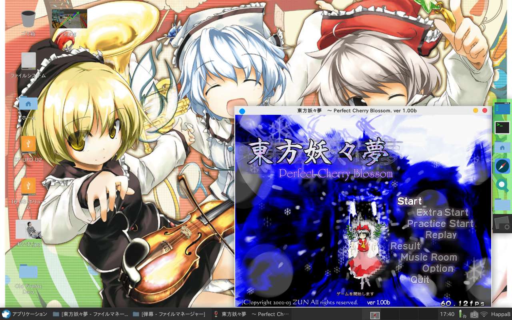
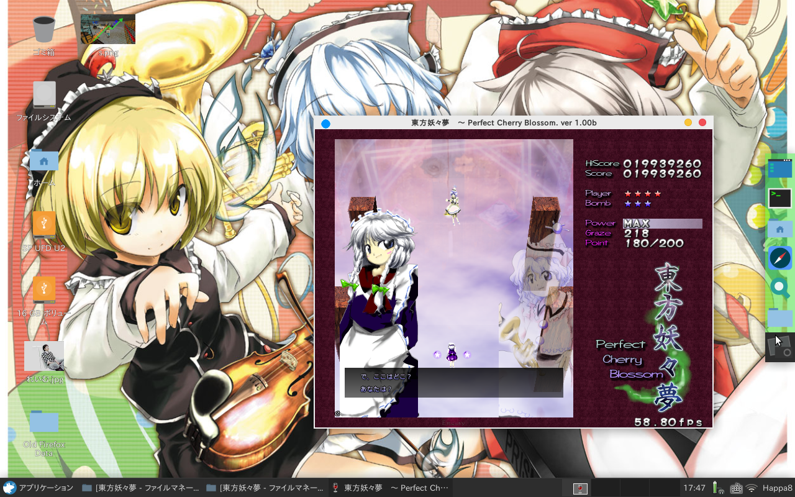

wineで東方を動かしてみた！
wineってなに？
Ubuntuにはたくさんのパッケージがあり、その中の多くがオープンソースなため、無料で、たくさんのアプリケーションを使うことができます。
しかし、やはりこの世界でOS市場の大半を占めているのはWindowsなんです！
これは変えられない事実なんです…
いつか…Linuxが世界を制覇する世界を願って…
おっとそんな話ではありません。
そんなわけで、便利なくせにwindows向けにしか開発されていないソフトやゲームがかなり多いわけです。
でも、俺はLinux使いだ！Linuxしか使いたくねぇ！という人も少なからずいるでしょう。そんな人のために、とっておきのソフトがあります。
そう、それがwineです！
wineというのはLinux上でwindowsソフトを動かすためのソフトです。
一見VMwareのような仮想環境のようなものに見えるかもしれませんが、違います。これは、windows用のAPIをLinuxでも動かせるような互換システムに置き換えて…
と、まぁとりあえず仮想環境じゃないんです。（私もうまく説明できませんし(^ ^;)
しかし、このwineでも全てのwindowsソフトが動くわけではありません。
しかし、どうしてもwindowsソフトを動かしたい、という人は使ってみるといいでしょう。
東方を動かすっ！！
さて、私はどうしても動かしたいゲームがあったので、wineで動かしてみることにします。
動かすゲームは、東方project第７弾「東方妖々夢」です。
ではでは、早速wineのインストールをしていきましょう。
wineをインストールするコマンドはこちらです。
$ sudo apt-get install wine
これでインストールできない場合は、一旦
$ sudo apt-get update
して、データベースを更新してみるといいでしょう。
それではお待ちかね。妖々夢を動かしてみましょう。

はい。とりあえずなんの問題もなく動きました。（壁紙？気にしてはいけない。）
ただ、すこし…いやかなり音割れしてますね…
音割れを解消するために、PurseAudioをアンインストールしてみましょう。
さてPurseAudioのアンインストールをするコマンドはこちらです
$ sudo apt-get remove purseaudio
さて、かなり音割れは改善されました（といっても動画あるわけじゃないからよくわからないですね(^ ^;)

さて、うまく動作しました。こんな風にwindousソフトが動くことがあります。
必ずしも動くとは限らないのでご注意ください。
それでは良いwineライフを！